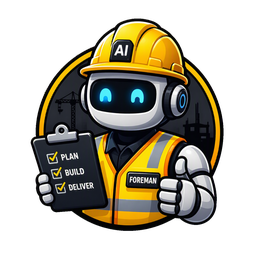

Installs as an app (standalone window). If this button doesn't do it in your browser, install from the browser's own menu → Add to Home Screen / Install (iPhone: Share → Add to Home Screen).
Install and open the app in just one browser — an install in one browser is separate from another, so this shows “Installed” only in the browser you installed from.
Push arrives even with this page closed. On iPhone, first use Share → Add to Home Screen, then open from that icon. Each event is also gated by the foreman's own settings, and a crashed run can't send its own alert (the status still flips to “no signal”).
Token is kept in this browser's localStorage only — never sent anywhere except Turso. Rotate it if this device is lost.